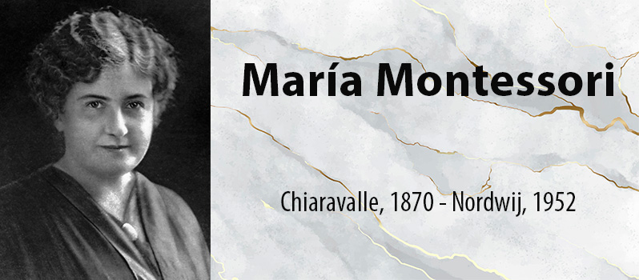

Esta biografía de la educadora italiana María Montessori ofrece datos de diferentes publicaciones pero también aporta algunos aspectos conocidos de su vida y obra. Su objetivo es dar a conocer el contexto que rodeó a Montessori, para entender la importancia de sus aportaciones, a través de un acercamiento objetivo, que muestra los matices de una mujer que logró la difusión internacional de su obra y que marcó una influencia en otras alternativas pedagógicas
Nació el 31 de agosto de 1870 en el poblado de Chiaravelle en la provincia de Ancona, puerto del mar Adriático en el centro de Italia, Pedagoga italiana que renovó la enseñanza desarrollando un particular método, conocido como método Montessori, que se aplicaría inicialmente en escuelas primarias italianas y más tarde en todo el mundo. Dirigido especialmente a niños en la etapa preescolar, se basaba en el fomento de la iniciativa y capacidad de respuesta del niño a través del uso de un material didáctico especialmente diseñado.El método proponía una gran diversificación del trabajo y la máxima libertad posible, de modo que el niño aprendiera en gran medida por sí mismo y al ritmo de sus propios descubrimientos.Licenciada en medicina en 1896 por la Universidad de Roma y ayudante el año siguiente en la cátedra de psiquiatría de la misma universidad, Maria Montessori se vio impulsada por su instinto al estudio de los niños con alteraciones del desarrollo cognitivo, y advirtió inmediatamente que su problema, más que médico,era pedagógico. Expuso sus ideas sobre esta materia en el congreso pedagógico de 1898 de Turín.
La lectura de las obras de Jean Marc Gaspard Itard y de Édouard Séguin, los dos ilustres maestros de la educación de alumnos con discapacidades intelectuales en Francia, la ayudaron a profundizar en los problemas de dicha educación especial, que bien pronto se le apareció como aplicación y revelación de las leyes generales de la educación del niño.
María Montessori revolucionó los parámetros educativos, existentes hasta ese momento, poniendo al Niño como auténtico protagonista de todo el proceso educativo. Transformó tan radicalmente la educación infantil, que después nada pudo ser igual que antes. Primero, porque, creó unos nuevos materiales con objeto de favorecer el autoaprendizaje. Y después, porque puso la escuela al alcance del Niño, pensando que, si algo tenía que cambiar,- y creía que había que cambiarmuchas cosas -, debía ser la Escuela, adaptándola al mundo infantil, y no el Niño.Siguiendo el Método Montessori los niños se desarrollan en un ambiente preparado, basado en unos principios naturales muy claros (autonomía; independencia; iniciativa; capacidad de elegir; desarrollo de la voluntad; y autodisciplina) con la idea de que el Niño sea su propio maestro. Montessori no quería crear genios, sino dar a cada persona la oportunidad de poder desarrollar sus propias capacidades, por sí misma y con los otros. Y, de esta manera, ayudar a los niños a ser unos seres más humanos más equilibrados e independientes.
Pero, estos principios innovadores, le crearon numerosas dificultades, hasta el punto de obligarle a tener que abandonar la Italia fascista de 1933, porque su experiencia educativa chocaba frontalmente con el sistema totalitario. El fascismo se servía de la escuela para adoctrinar a los jóvenes, los entrenaba para obedecer órdenes, y no para pensar y ser libres. Los convertía en instrumentos de guerra, y no de paz.
Durante su exilio María Montessori vivió en España, en Holanda, y en la India. En estos países desarrolló diversos programas de formación destinados a nuevos docentes. La experiencia bélica la llevó a profundizar en los temas educativos relacionados con la paz, llegando a la conclusión de que la educación es el único camino para construir la Paz. Precisamente por estos trabajos, fue nominada al premio Nóbel de la Paz, en tres oportunidades.
1947, regresó a Italia. Su Método ya era reconocido mundialmente y la recibieron con honores. Montessori, sin abandonar su proyección internacional se dedicó a la reorganización de las escuelas de su país y siguió profundizando en el conocimiento de la Infancia. La importancia de contar con un ambiente agradable y un mobiliario adecuado, con la finalidad de estimular la libertad física de los niños. De este modo, reemplazó las aulas oscuras, sin ventanas, ambientadas solamente con un pizarrón negro y que disponían a los alumnos alineados en sus bancos, por aulas amplias, donde los niños pudieran moverse sin ningún tipo de dificultad. Para ellos, creó mesas y sillas acordes al tamaño de los pequeños, a fin de que pudieran moverlas con facilidad. Asimismo, incorporó el uso de armarios bajos con cajones individuales. Montessori también reconoció la relevancia de que los niños tuvieran contacto con la naturaleza. De este modo, para que estos se desenvolvieran con independencia y pudiera entrar y salir de la sala libremente, propició espacios para las huertas comunicados con las aulas.
La creación de una vasta gama de materiales para favorecer la educación sensorial y motriz. Entre otros, es posible reconocer algunos para trabajar diferencias de peso y tamaño, distintos olores y sabores, escalas de colores, encajes sólidos y planos. En este sentido, uno de los aportes fundamentales de Montessori es que muchos de estos materiales son autocorrectores.* La introducción de ejercicios relacionados con la vida práctica y con la necesidad de independencia de los niños. A tal fin, incorporó, bastidores para atar y desatar, anudar y desanudar, hacer lazos, abrochar, etc. La función de estos materiales era lograr la coordinación de los movimientos cotidianos. La consideración de un nuevo rol para la maestra. Al respecto, Montessori planteaba que había que cambiar el papel de maestro dominante por el de un docente cuya función fundamental fuera la de un observador capaz de ayudar e interactuar con los niños cuando estos no pudieran valerse por sí mismos. La importancia de un papel activo y dinámico del alumno en el proceso de aprendizaje. En este sentido, proponía el desarrollo de la iniciativa y la autoconfianza en los niños, de modo tal que estos lograran hacer por ellos mismo las cosas que les interesaran, sin que se les fueran impuestos los límites de una severa disciplina.La prioridad de las clases individuales por sobre las lecciones colectivas, en relación con las enseñanzas debía respetar la individualidad de cada niño y que, por lo tanto, debía adecuarse a su ritmo de aprendizaje particular. La incorporación de materiales como letras en relieve y barras de color, entre otros, para la enseñanza de la lectura, la escritura y la aritmética. Gracias a la ayuda de esos elementos, el método Montessori permitió que los niños aprendieran a leer, escribir, contar y sumar antes de los seis años de edad, es decir, con más rapidez y facilidad de lo que hasta ese momento se creía que era posible.No separar a los niños de distintas edades (tres, cuatro y cinco años) por grupos etarios. Ella planteaba la necesidad de permitir que compartieran la misma sala, pues de este modo los pequeños podrían trabajar con compañeros de su misma edad y también con niños mayores o menores que ellos. El aprendizaje de los niños mayores se reforzaba sin ayudaban a niños menor, de la misma manera que los más pequeños se beneficiaban al ser estimulados por estar en contacto con otros más grandes.
Las propuestas pedagógicas de esta educadora tuvieron una notable trascendencia, tanto en su país natal como a nivel internacional. Al respecto, en el año 1911 Montessori dejó de dedicarse definitivamente a la consulta médica para abocarse a la tarea pedagógica y dicto conferencias acerca de su trabajo con los niños, así como también cursos para profesores en diferentes ciudades. En 1917 el gobierno español la invitó a inaugurar un instituto de investigación y fue designada como inspectora de escuelas en Italia en 1922. En el año 1933 debido exiliarse pues, durante el régimen de Benito Mussolini, acuso públicamente a la doctrina fascista de ¨formar a la juventud según sus moldes brutales¨. Hacia 1947, entonces, fundó el centro Montessori, en Londres, y recién ese mismo año pudo regresar a su patria para reorganizar las escuelas y volver a incorpórate como docente en la universidad de Roma.
Esta destacada pedagoga falleció en Holanda, en 1952. Si bien el fundamento de su método respondía a los desarrollos biológicos y psicológicos que se conocían en su época y que hoy han sido superados por las nuevas teorías, muchas de sus propuestas siguen teniendo vigencia. Desde la mirada actual, por lo tanto, aun no es posible dejar de reconocer el significativo aporte que representaron para la educación su método y los materiales didácticos que ideó.